Cindy's desk
Duck, Bean, Little H
I'm Home
Curated Chaos
Reveal
Still Life
Pixel
Time light
Cindy's Art of the Web
How would my digital desk look like? Browse to see how I stay productive and positive :D
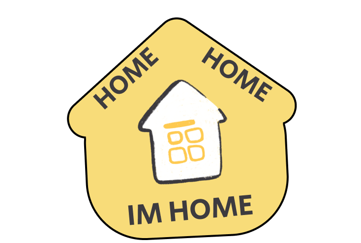 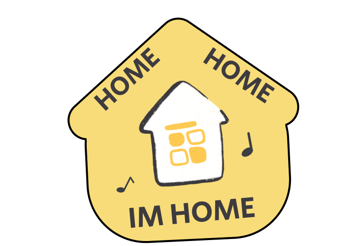
Arrive home with your entrance music! We created an IFTTT droplet for people to surprise their roommates when they get close to the home location. A combination of interaction, animation, and responsive design with a humorous but serious undertone.
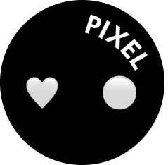 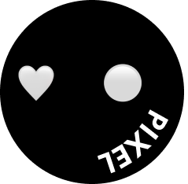
Everyone sanitize and socialize in a pixelated world. Curious? See how.
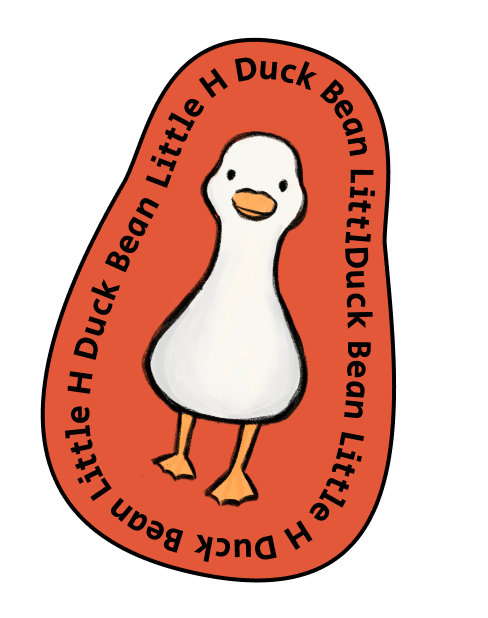 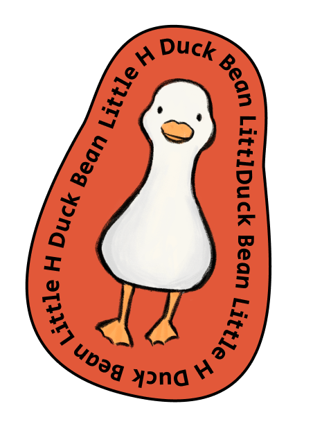
What if my illustrated characters run into each other? Duck, Bean, and Little H break the barriers of ecosystems, storylines, or fixed sizes as I animate them in a short fun story.
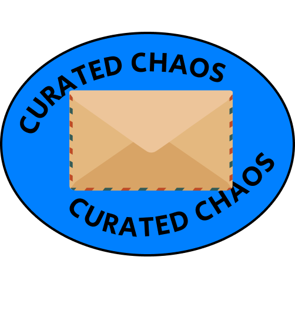 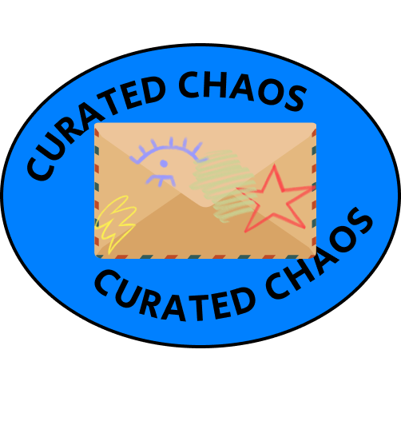
Introducing a free drawing format where people can create chaos with each other following the rules of Curated Chaos. Here we explore interaction and responsive design.
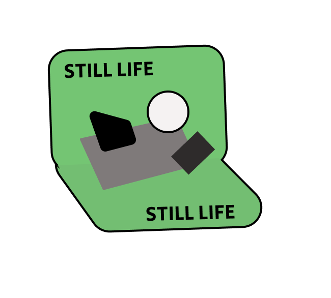 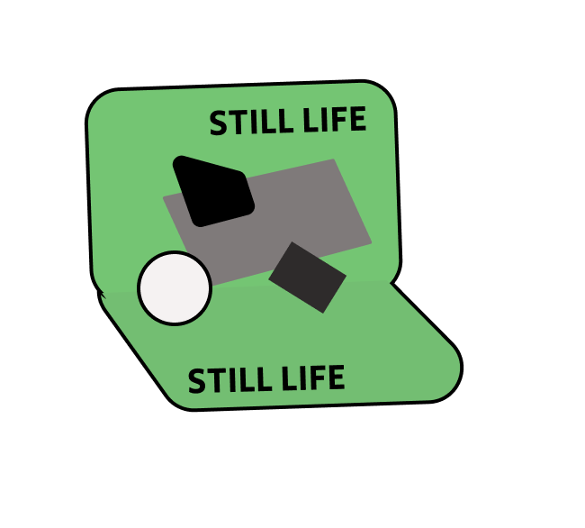
A still life painting...but in css! I painted the items with a mix of reality and abstraction. Someone's eavesdropping.
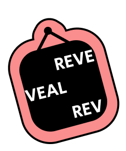
Reveal what Taiwanese host & artist Tsai Kang Yong has always kept for you. An exploration that transforms a physical experience into a digital one through generative arts.
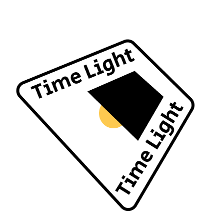 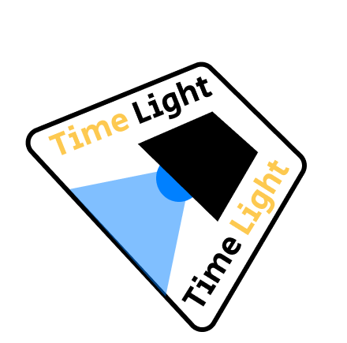
Time passes differently depending on how it's spent...How would it look like when time is light? A little challenge with javascript.